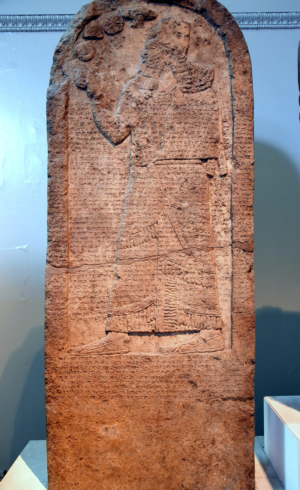

Kurkh Monolith of Shalmaneser III

- Find Name
- Kurkh Monolith of Shalmaneser III
- Alternative Names
- Kurkh Stele
- Historical Period
- Iron Age II
- Artifact Date
- c. 853 BC
- Date Discovered
- 1861
- Discovery Location
- Kurkh, Turkey (near Diyarbakir)
- Current Location
- British Museum, London
- Timeline Era
- Divided Monarchy
- Description
- A stone monolith of Shalmaneser III describing his sixth year, the Battle of Qarqar in 853 BC, against a coalition of western kings. Its list of allies includes 'Ahab the Israelite,' credited with 2,000 chariots and 10,000 foot soldiers, the largest chariot force in the alliance.
- Biblical Significance
- The monolith is the earliest Assyrian mention of an Israelite king and confirms Ahab commanded a major military power, just as Kings portrays the wealthy Omride kingdom. Ahab is no hero of faith, but his presence in an enemy's monument anchors Israel's divided kingdom firmly in international history.
- Evidence Class
- Direct
- Interpretations
- Scholars agree the monolith names Ahab of Israel among the kings who fought Shalmaneser III at Qarqar in 853 BC, confirming Ahab’s reign and army from an enemy’s record.
- Scripture Illuminated
- Related People
- Related Books
- Related Places
- Related Events
Awaiting Review Not yet checked against scholarly sources. Treat its claims as provisional until this entry is reviewed. About verification
Last reviewed: not yet reviewed